Yarn Yardage by Project
Pick your project for detailed yardage charts, skein counts, and FAQs — then run the numbers through the free calculator.
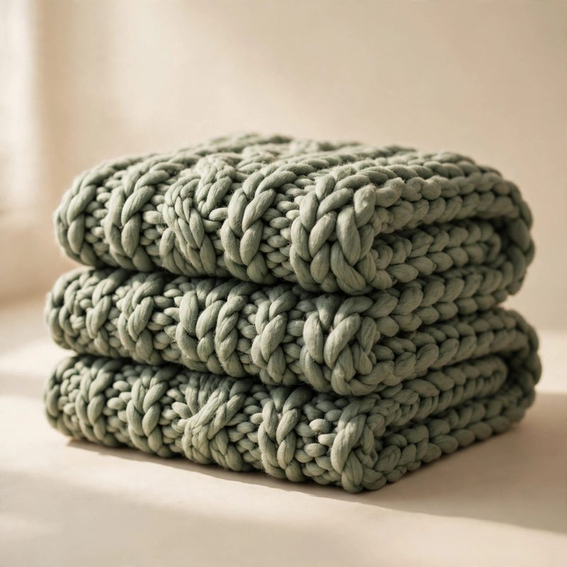
Baby blanket Find out exactly how much yarn you need for a baby blanket. Yardage by yarn weight, skein counts, and a free c… Throw blanket How much yarn for a throw blanket? 1,400–3,200 yards by yarn weight for a 52″ × 60″ throw, plus skein counts a… Queen-size blanket Planning a queen-size blanket? See yardage estimates by yarn weight for a 90″ × 90″ blanket, skein counts, and… King-size blanket How many yards for a king-size blanket? 3,600–8,500 yards by yarn weight for a 108″ × 108″ blanket, with skein… Twin-size blanket How much yarn for a twin-size blanket? Yardage estimates by yarn weight for a 66″ × 90″ blanket, skein counts,…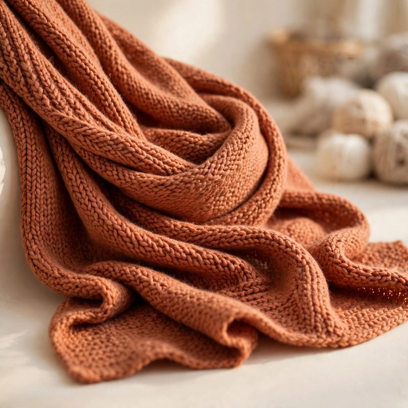
Scarf How much yarn for a scarf? Yardage by yarn weight for knit and crochet scarves, skein counts, and a free yarn …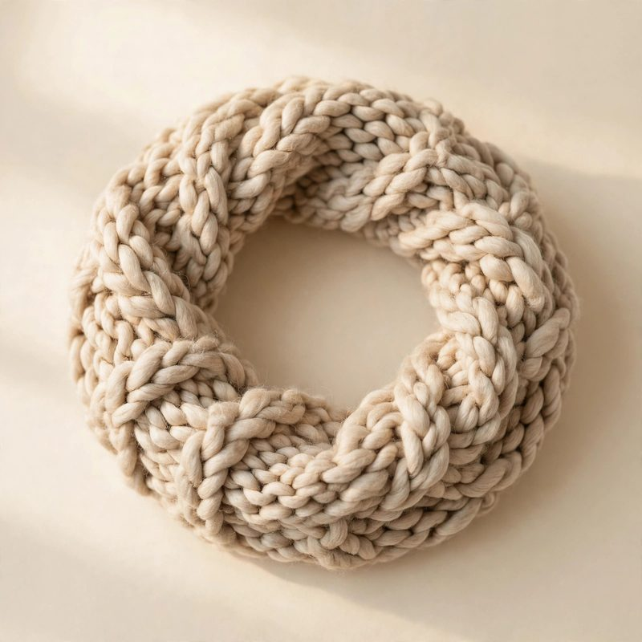
Cowl How much yarn for a cowl? Yardage by yarn weight for knit and crochet cowls, skein counts, and a free yarn cal…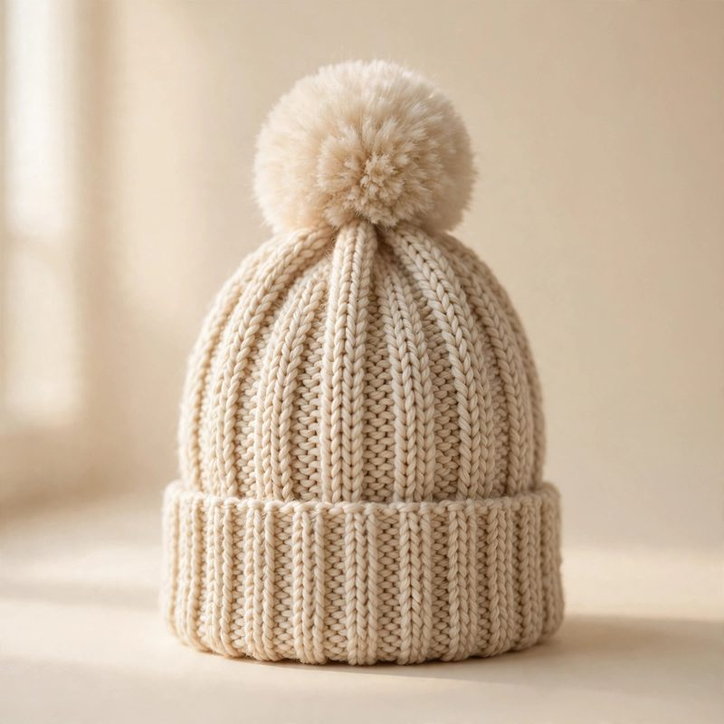
Hat / beanie How much yarn for a hat? 130–300 yards by yarn weight for knit and crochet hats and beanies, with skein counts…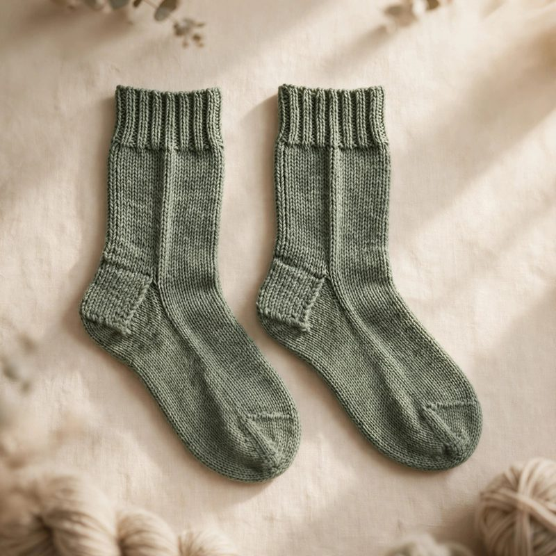
Socks (pair) How much yarn for socks? Yardage by yarn weight for a pair of adult socks, skein counts, and a free yarn calcu…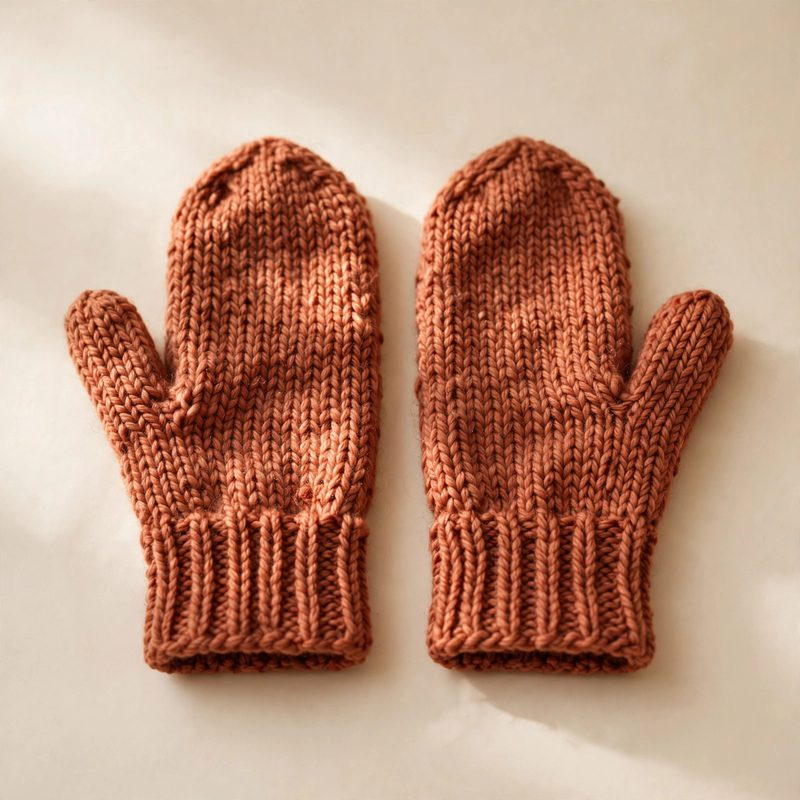
Mittens How much yarn for mittens? 150–250 yards by yarn weight for knit and crochet mittens and gloves, with skein co…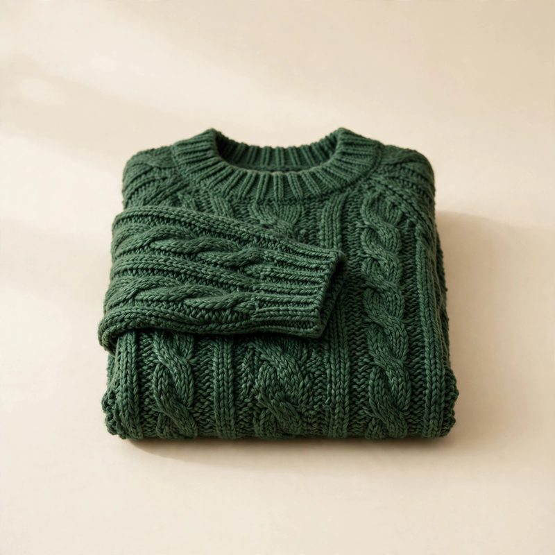
Adult sweater How many skeins for a sweater? Yardage by yarn weight for an adult sweater, skein counts by size, and a free y…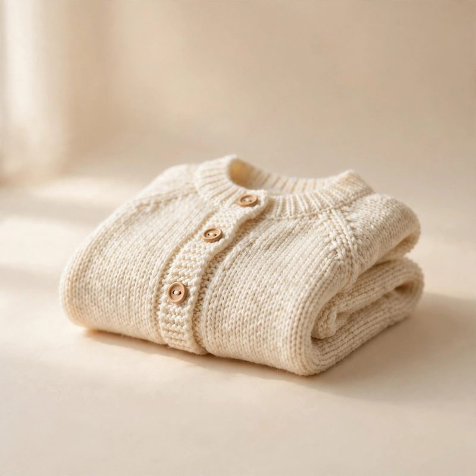
Baby sweater How much yarn for a baby sweater? 500–800 yards by yarn weight for a 12-month baby sweater, with skein counts …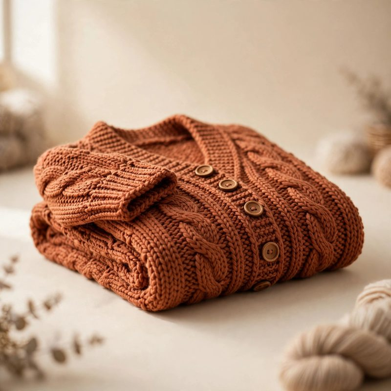
Cardigan How much yarn for a cardigan? Yardage by yarn weight for an adult cardigan, skein counts, and a free yarn calc…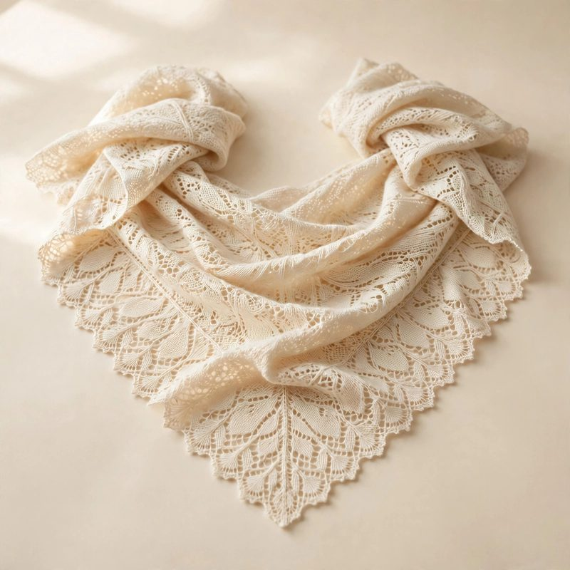
Shawl How many skeins for a shawl? 425–900 yards by yarn weight for knit and crochet shawls, with skein counts and a… Vest How much yarn for a vest? Yardage by yarn weight for an adult knit or crochet vest, skein counts, and a free y…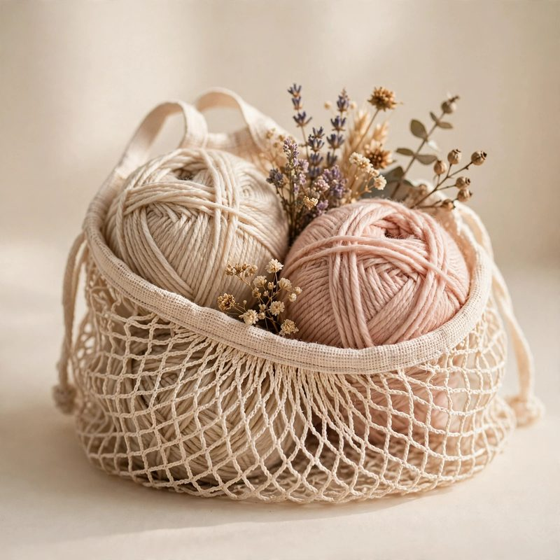
Market bag How much yarn for a market bag? Yardage by yarn weight for crochet and knit market bags and totes, plus a free…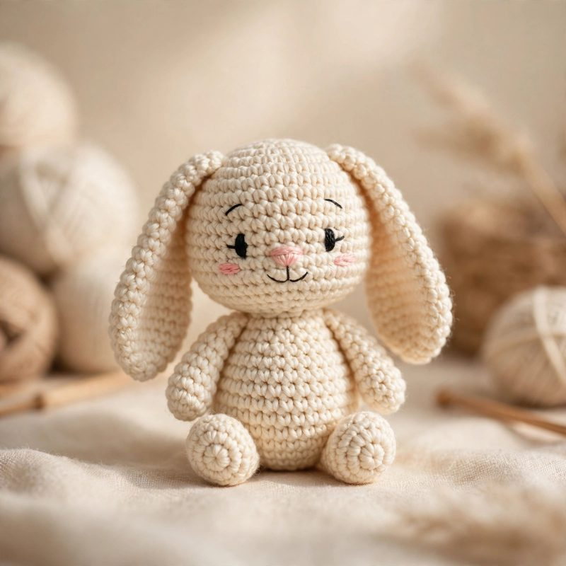
Amigurumi toy How much yarn for amigurumi? Yardage estimates for small, medium, and large crochet toys, plus a free yarn cal…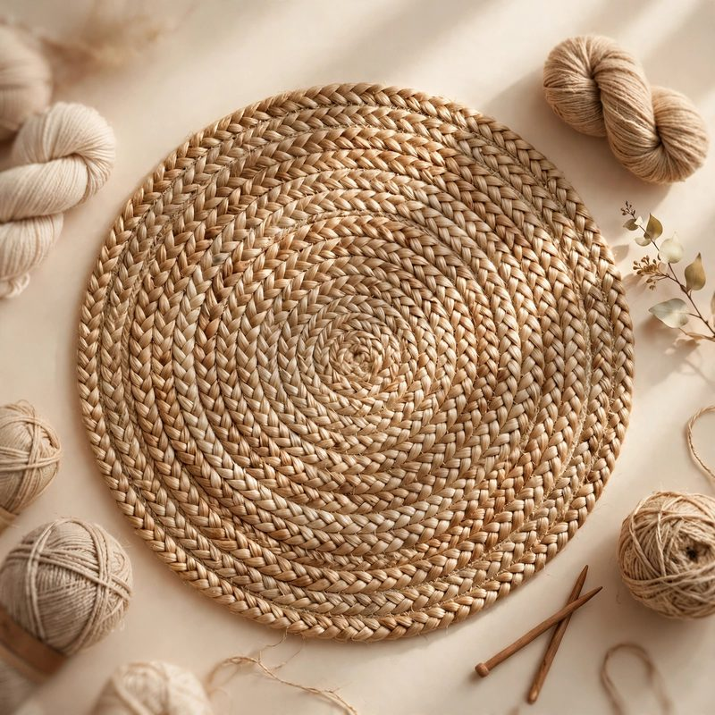
Rug How much yarn for a crochet rug? Yardage by yarn weight for round and rectangular rugs, plus a free yarn calcu…